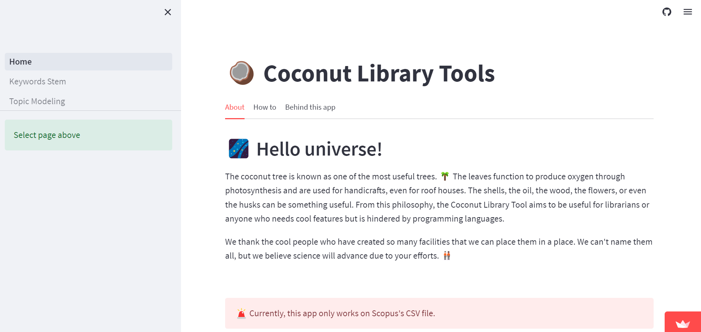

Coconut Library Tool
in app
May 1, 2023
About the App
Coconut Library Tool aims to be useful for librarians or anyone who needs cool features but is hindered by programming languages. Using this app librarians can perform (i) keyword stem, (ii) topic modeling, (iii) bidirected network, and (iv) sunburst

Developer
- Faizhal Arif Santosa (Librarian, Polytechnic Institute of Nuclear Technology, National Research and Innovation Agency)
- Crissandra George (Digital Collections Manager Librarian, Case Western Reserve University)
Advisor
- Dr. Manika Lamba
Keyword Stem
-
Put your Scopus CSV file.
-
Choose your preferable method. Picture below may help you to choose wisely.

-
Now you need to select what kind of keywords you need.
-
Finally, you can download and use the file on VOSviewer, Bibliometrix, or else!
Topic Modeling
-
Put your Scopus CSV file. We use abstract column for this process.
-
Choose your preferred method.
-
Finally, you can visualize your data.
Bidirected Network
-
Put your Scopus CSV file.
-
Choose your preferable method. Picture below may help you to choose wisely.
-
Choose the value of Support and Confidence. If you’re not sure how to use it please read the article above or just try it!
-
You can see the table and a simple visualization before making a network visualization.
-
Click “Generate network visualization” to see the network.
Sunburst
-
Put your Scopus CSV file.
-
You can set the range of years to see how it changed.
-
The sunburst has 3 levels. The inner circle is the type of data, meanwhile, the middle is the source title and the outer is the year the article was published.
-
The size of the slice depends on total documents. The average of inner and middle levels is calculated by formula below:
avg = sum(a * weights) / sum(weights)